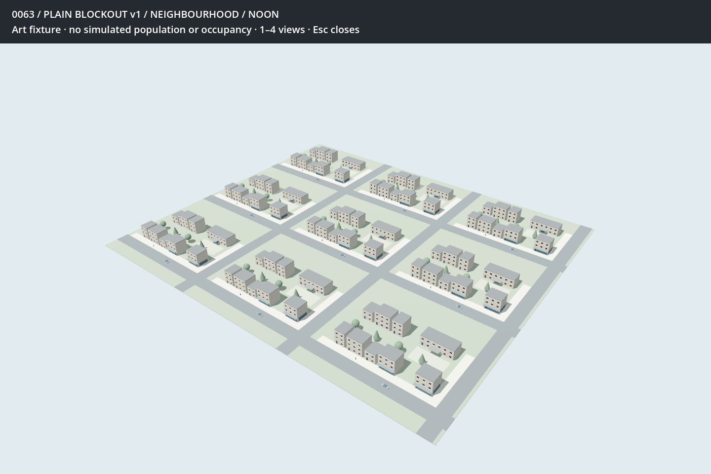

BOROUGH / 0063 / SPECIMEN v1One block, before the treatments
Plain Godot blockout in fixed noon light. Review the layout, building mix, proportions and cameras. Material-rich, sculpted and middle treatments follow layout agreement.
This is an isolated art fixture with provisional authored dimensions, not live Lots. No simulation, occupancy, abandonment or material finish is being demonstrated.
The specimen
Six homes, two shops and a school around open ground. Two residential frontage widths; two and three storeys.

Street and corner
Shop glazing and canopies establish use. The school entrance and court remain visible through the gaps.

The imported module
Blender-authored openings, sill and mullion, assembled in Godot. This is a pipeline proof, not a finished treatment.

Repetition screen
Nine identical copies deliberately reveal the repeated stamp. No population or performance claim.

Review: is this a representative specimen for the three treatments? Name any layout or building-family changes before it is frozen.